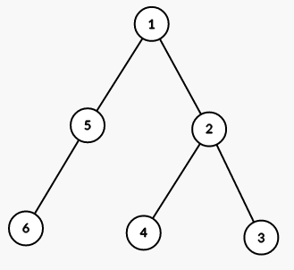
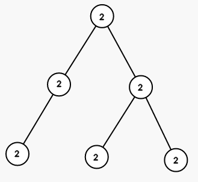
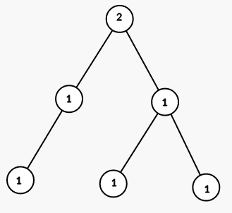
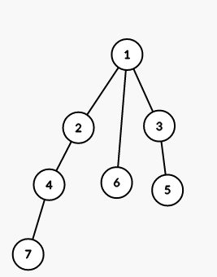
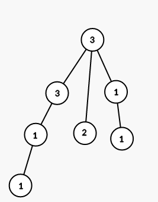

You are given a rooted tree with n vertices. The vertices are numbered from 1 to n, the root is the vertex number 1.
Each vertex has a color, let's denote the color of vertex v by cv. Initially cv = 0.
You have to color the tree into the given colors using the smallest possible number of steps. On each step you can choose a vertex v and a color x, and then color all vectices in the subtree of v (including v itself) in color x. In other words, for every vertex u, such that the path from root to u passes through v, set cu = x.
It is guaranteed that you have to color each vertex in a color different from 0.
You can learn what a rooted tree is using the link: https://en.wikipedia.org/wiki/Tree_(graph_theory).
The first line contains a single integer n (2 ≤ n ≤ 104) — the number of vertices in the tree.
The second line contains n - 1 integers p2, p3, ..., pn (1 ≤ pi < i), where pi means that there is an edge between vertices i and pi.
The third line contains n integers c1, c2, ..., cn (1 ≤ ci ≤ n), where ci is the color you should color the i-th vertex into.
It is guaranteed that the given graph is a tree.
Print a single integer — the minimum number of steps you have to perform to color the tree into given colors.
6
1 2 2 1 5
2 1 1 1 1 1
3
7
1 1 2 3 1 4
3 3 1 1 1 2 3
5
The tree from the first sample is shown on the picture (numbers are vetices' indices):

On first step we color all vertices in the subtree of vertex 1 into color 2 (numbers are colors):

On seond step we color all vertices in the subtree of vertex 5 into color 1:
On third step we color all vertices in the subtree of vertex 2 into color 1:

The tree from the second sample is shown on the picture (numbers are vetices' indices):

On first step we color all vertices in the subtree of vertex 1 into color 3 (numbers are colors):
On second step we color all vertices in the subtree of vertex 3 into color 1:
On third step we color all vertices in the subtree of vertex 6 into color 2:
On fourth step we color all vertices in the subtree of vertex 4 into color 1:

On fith step we color all vertices in the subtree of vertex 7 into color 3: